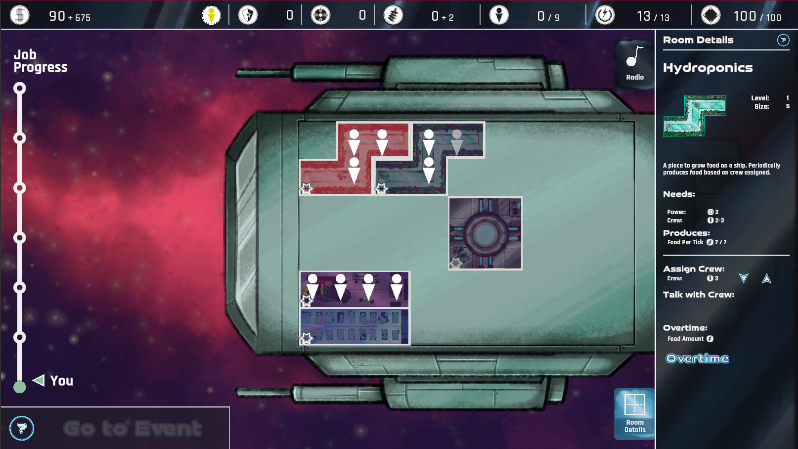

A Story Based Resource Management RPG
A Cog in The Cosmic Machine is a resource management game with a larger focus on story and choice. The game was created by 21 students (7 programmers) at Bradley University primarily using Unity and C#. This project provided me with a great opportunity to gain experience working in a larger team, and with people from various disciplines such as UX, art, and design.

My Contribtuions:
- UI programming
- Gameplay programming
- Audio programming
Tools I Used:
- Unity
- C#